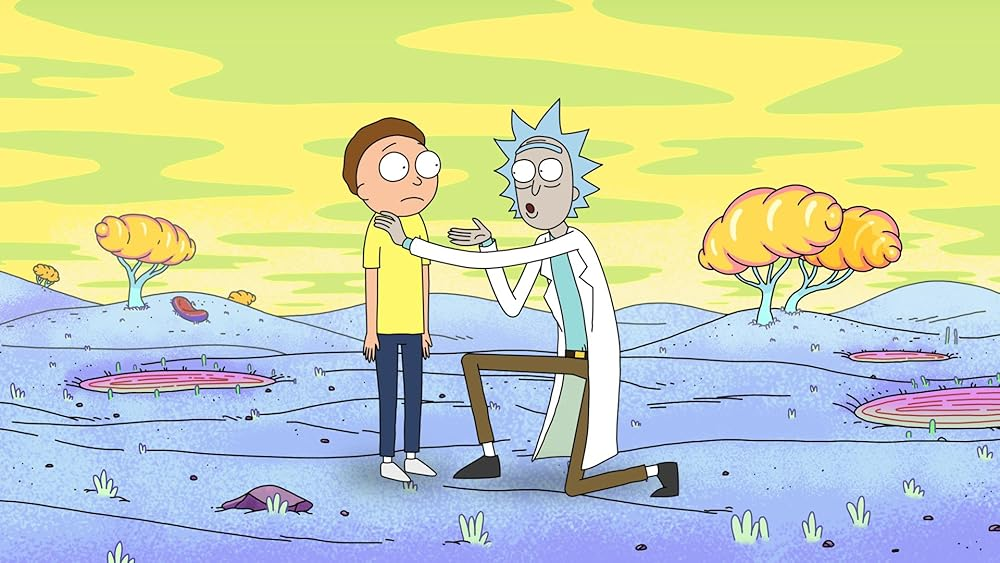
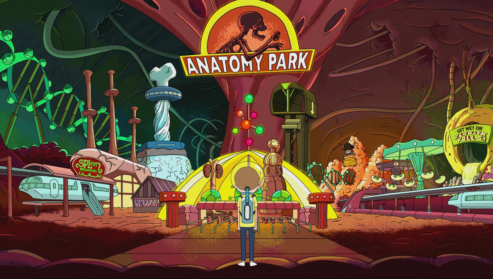
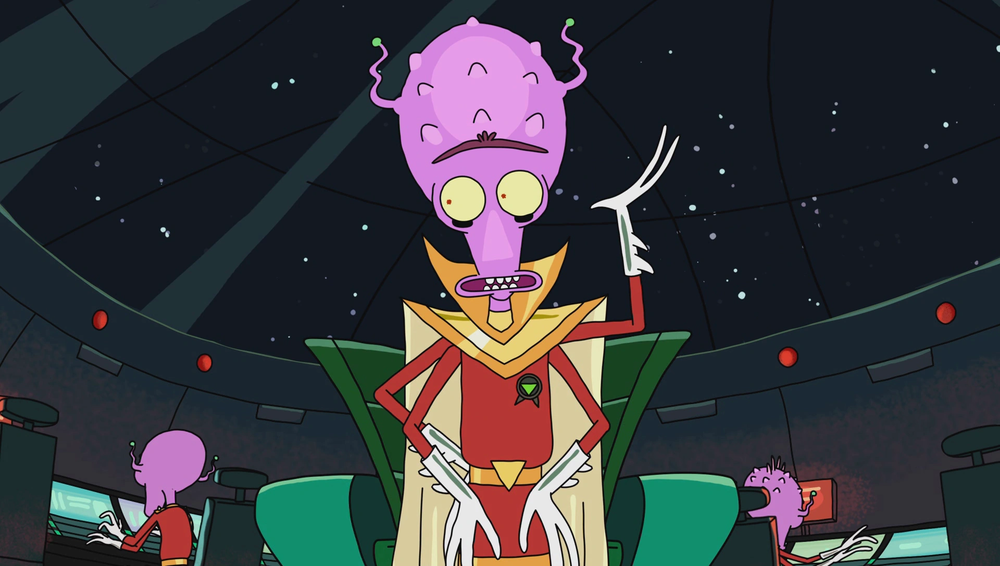
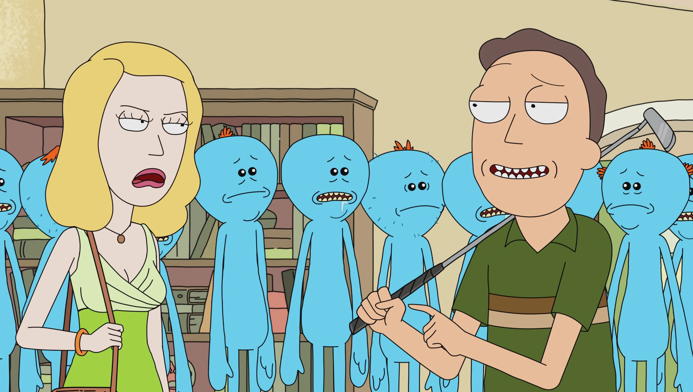
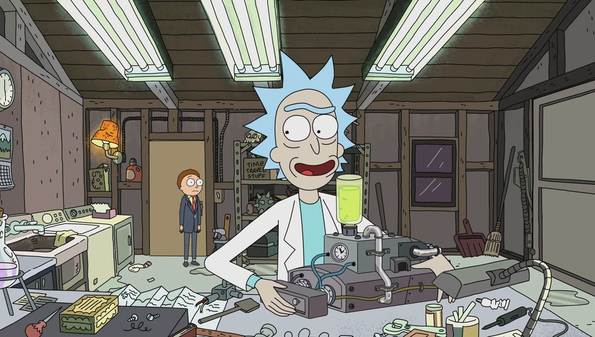
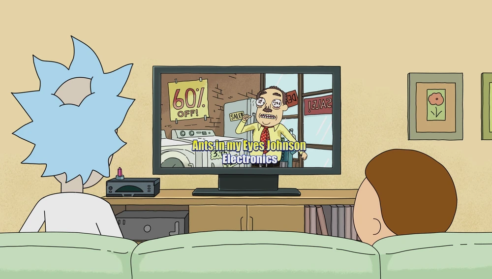
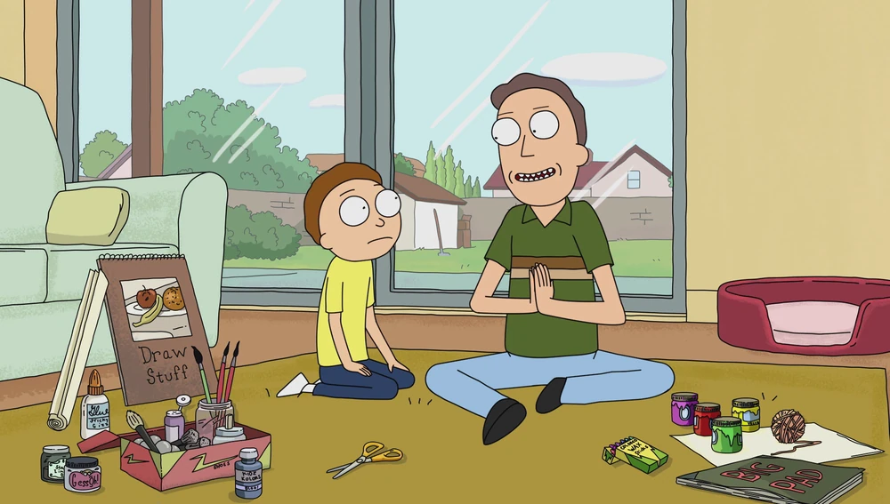
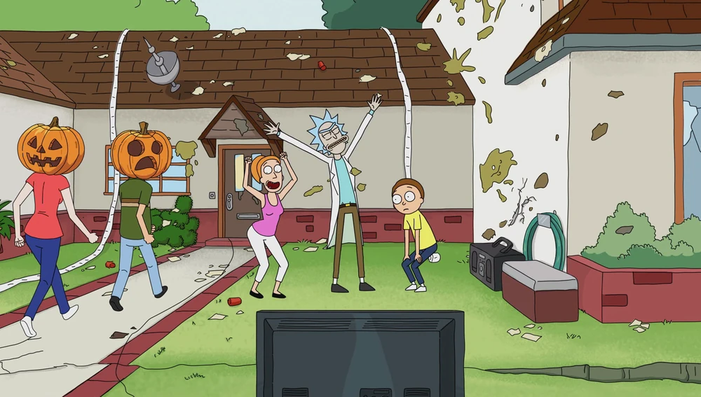

EXPLORAR TEMPORADAS

Um cientista sociopata arrasta seu neto inocente para perigosas aventuras interdimensionais.
Rick ajuda Jerry com seu cachorro.

Rick injeta Morty em um homem para salvar Anatomy Park. Jerry quer um natal sem tecnologia. Ele lamenta quando seus pais o apresentam ao amigo.

Rick e Morty tentam chegar ao fundo de um mistério neste episódio estilo M. Night Shyamalan.

Rick proporciona à família uma solução para seus problemas, ficando liberado para ir a uma aventura liderada por Morty.

Rick oferece a Morty uma poção de amor para conquistar Jessica.
Morty se transforma no pai de um bebê extraterrestre, enquanto Rick e Summer ficam presos em uma dimensão perigosa.

Rick conecta a TV da família ao cabo interdimensional, o que permite ver a televisão infinita de todo o multiverso.

Summer consegue um trabalho em uma loja de penhora cujo proprietário é o Diabo. Jerry ajuda Morty no seu projeto de ciências.
Rick tem um encontro com antigos parceiros, o que acaba se tornando um problema com Morty.

Beth e Jerry vão a um encontro deixando Rick no comando. Morty não aceita ir a novas aventuras se a casa não estiver nas mesmas condições na volta.